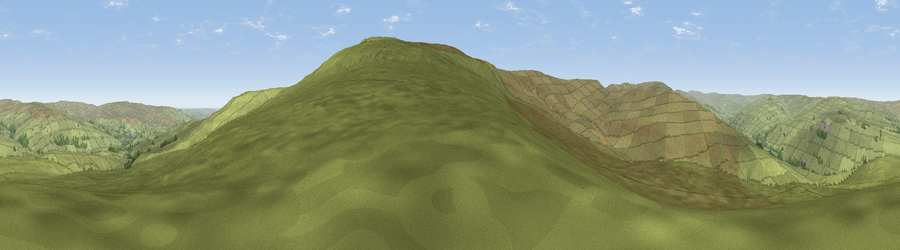

Viewpoint near Westgate
#19681 in England · top 54% of its area beats it · near WestgateThe view, rendered

A 360° render of this exact spot computed from the terrain model, tree cover and land cover — summer colours, afternoon light, calibrated against photographs of famous viewpoints. Real trees, hedges and buildings will differ in detail.
The panorama
Grey silhouette: terrain skyline in each direction (720 bearings, Earth curvature and refraction included). Dashed green: skyline with trees (+15 m) and buildings (+8 m) as obstacles. Blue strip: how far the ground is visible on each bearing.
Where the view opens
Wedge length = distance to the farthest visible ground on that bearing (vegetation-aware). Rings at 10, 25 and 50 km.
What fills the view
98% grassland · 2% woodland
Angular shares of the visible panorama (visual magnitude), not map area. Landscape diversity 0.05 (0–1 Shannon).
Key numbers
More beautiful places nearby
The staircase of upgrades: each row has a higher view potential than everything closer. Driving times are estimates from straight-line distance, calibrated against real road routing — check an actual route before setting out.
| Place | Direction | Drive | Score |
|---|---|---|---|
| Viewpoint near Westgate | SSE · 1 km | ~2 min | 60.2 |
| Viewpoint near Stanhope | E · 2 km | ~5 min | 61.4 |
| Viewpoint near Stanhope | E · 2 km | ~5 min | 62.8 |
| Viewpoint near Westgate | S · 3 km | ~7 min | 66.4 |
| Raven Seat | SE · 4 km | ~10 min | 68.5 |
| Viewpoint near Newbiggin | SSW · 5 km | ~10 min | 69.4 |
| Viewpoint c10644_7960 | SE · 5 km | ~11 min | 69.6 |
| Viewpoint near Frosterley | SE · 7 km | ~14 min | 70.6 |
54.71650, -2.09039 · source: screening · position refined by local search. Computed location — check access rights before visiting.